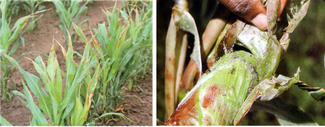
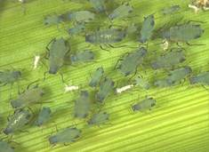
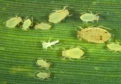

| Home |
| SORGHUM |
| 1. Sorghum Shootfly |
| 2. stem borer |
| 3. pink stem borer |
| 4. shoot bug |
| 5. earhead bug |
| 6. sorghum midge |
| 7. plant lice (Aphids) |
| 8. earhead web worm |
| 9. gram caterpiller |
| 10. plant bug |
| 11. stink bug |
| 12. mirid bug |
| 13. slug caterpiller |
| 14. Leaf roller |
| 15. flea beetle |
| 16. red hairy caterpiller |
| 17. semilooper |
| 18. weevils |
| 19. wingless grasshopper |
| Integrated Pest Management |
| Questions |
| Download Notes |
PESTS OF SORGHUM :: Major Pests :: Plant Lice (Aphids)
7. Plant lice (Aphids): Rhopalosiphum maidis, Melanaphis sacchari (Aphididae: Hemiptera)
Distribution and status: All sorghum-growing areas of the world.
Host range: Sorghum, maize, ragi
Damage symptoms: Colonies of aphids are seen in central leaf whorl, stems, or in panicles. The young and adults suck the plant juice. This frequently causes yellowish mottling of the leaves and marginal leaf necrosis. The aphid produces an abundance of honeydew on which molds grow. In panicles, honeydew may hinder harvesting. The aphid also transmits maize dwarf mosaic virus.
 |
Bionomics
 |
Rhopalosiphum maidis: The aphid is dark bluish-green and somewhat ovate. It is 2 mm long, with black legs, cornicles, and antennae. Winged and wingless forms occur. Females give birth to living young without mating and a generation requires only a week or so. The adult is yellow coloured with dark green legs. |
 |
Melanaphis sacchari: The sugarcane aphid is yellow to buff. Numbers increase rapidly during dry spells or at the end of the rainy season. The female of the wingless form deposits 60-100 nymphs within its reproductive period of 13-20 days. The winged form produces slightly fewer nymphs. The life cycle is completed in 5.5-7.0 days during the dry season. |
Management: Spray the base of attacked plants with a contact (or) systemic insecticide like dimethoate 30 EC or methyl demeton 25 EC 500 ml in 500 L of water